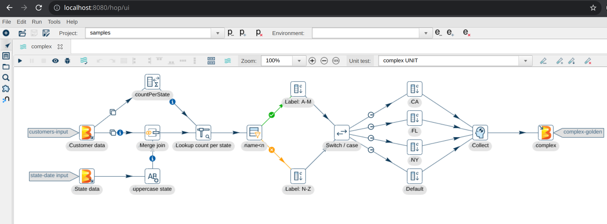

Hop Web Development Guide
Building or customizing Hop Web
Hop Web is available as a basic Docker container image from Docker Hub. Check the user manual for Hop Web for more information.
Follow the steps in this guid to learn how you can build your own Hop Web installation or docker image.
| Hop Web is built with Eclipse RAP, and translates the default Hop Gui desktop application into a web version. It is functional, but there are limitations. Feel free to contribute if you’d like to improve Hop Web. |
Prerequisites
Before starting, ensure you have:
-
Java 21 installed and available in your PATH
-
Apache Hop built from source (run
mvn clean install -DskipTestsin the Hop source directory) -
Apache Tomcat 10 downloaded and extracted
Build Hop
Hop currently doesn’t offer any standalone Hop Web builds.
Running your own Hop Web environment is straightforward but requires you to build Hop. Follow the development environment setup guide to get the Hop source code and build Hop.
After building Hop, note the path to your Hop build directory (e.g., ~/git-hop/hop). You’ll need to run the commands below from this directory.
The steps to set up the default Docker image are included in a helper script docker/create_hop_web_container.sh in the Hop code base.
This should get you started to make modifications or create your own version entirely.
Additional info in Building the Hop Web Docker container
Tomcat Configuration
Copy files
We’ll use Apache Tomcat in this example. If you use another application server, the process should be similar.
Hop 2.x is built with Java 21, so you’ll need to download the latest Tomcat 10 (or use the official Tomcat 10 Docker image).
Copy or extract the following files from your Hop build, where $CATALINA_HOME is your Tomcat installation folder.
# Set CATALINA_HOME if it's not already set (replace with your actual Tomcat installation path)
export CATALINA_HOME="${CATALINA_HOME:-/path/to/your/tomcat}"
# Step 1: Extract webapp to ROOT directory (not /hop/)
unzip -o assemblies/web/target/hop.war -d $CATALINA_HOME/webapps/ROOT/
# Step 2: Extract client distribution (contains config, libs, plugins, JDBC drivers)
unzip -o assemblies/client/target/hop-client-*.zip -d /tmp/hop-client/
# Step 3: Copy config folder
cp -r /tmp/hop-client/hop/config $CATALINA_HOME/webapps/ROOT/
# Step 4: Copy core libraries
cp -r /tmp/hop-client/hop/lib/core/* $CATALINA_HOME/webapps/ROOT/WEB-INF/lib/
# Step 4b: Remove RCP jar (RCP is for desktop GUI, not web)
rm -f $CATALINA_HOME/webapps/ROOT/WEB-INF/lib/hop-ui-rcp-*.jar
# Step 5: Copy beam libraries
cp -r /tmp/hop-client/hop/lib/beam/* $CATALINA_HOME/webapps/ROOT/WEB-INF/lib/
# Step 6: Copy plugins
cp -r /tmp/hop-client/hop/plugins $CATALINA_HOME/
# Step 7: Copy JDBC drivers
mkdir -p $CATALINA_HOME/jdbc-drivers
cp -r /tmp/hop-client/hop/lib/jdbc/* $CATALINA_HOME/jdbc-drivers/
# Step 8: Cleanup
rm -rf /tmp/hop-clientModify startup script
Configure Tomcat to run Hop by adding the information below to $CATALINA_HOME/bin/startup.sh.
Important: You must insert these environment variables and CATALINA_OPTS before the exec line that starts Tomcat. The exec line should be the last line in the file and looks like:
exec "$PRGDIR"/"$EXECUTABLE" start "$@"To find the correct insertion point:
1. Open $CATALINA_HOME/bin/startup.sh in a text editor
2. Search for the line containing exec "$PRGDIR"/"$EXECUTABLE" start "$@"
3. Insert the code block below immediately before that line
4. Ensure there is only one exec line in the file (if you see multiple, remove any duplicates after the first one)
Add the following code block:
export HOP_AES_ENCODER_KEY=
# specify where Hop should store audit information
export HOP_AUDIT_FOLDER="${CATALINA_HOME}/webapps/ROOT/audit"
# specify where Hop should manage configuration metadata (e.g. projects and environments information).
export HOP_CONFIG_FOLDER="${CATALINA_HOME}/webapps/ROOT/config"
# specify the hop log level
export HOP_LOG_LEVEL="Basic"
# any additional JRE settings you want to pass on
#export HOP_OPTIONS=
# default Hop password encoder plugin
export HOP_PASSWORD_ENCODER_PLUGIN="Hop"
# point Hop to the plugins folder
export HOP_PLUGIN_BASE_FOLDERS="${CATALINA_HOME}/plugins"
# path to jdbc drivers
export HOP_SHARED_JDBC_FOLDERS="${CATALINA_HOME}/jdbc-drivers"
# Set TOMCAT start variables
# Note: Use double quotes so shell variables are expanded before being passed to JVM
export CATALINA_OPTS="${HOP_OPTIONS} -DHOP_AES_ENCODER_KEY=\"${HOP_AES_ENCODER_KEY}\" -DHOP_AUDIT_FOLDER=\"${HOP_AUDIT_FOLDER}\" -DHOP_CONFIG_FOLDER=\"${HOP_CONFIG_FOLDER}\" -DHOP_LOG_LEVEL=\"${HOP_LOG_LEVEL}\" -DHOP_PASSWORD_ENCODER_PLUGIN=\"${HOP_PASSWORD_ENCODER_PLUGIN}\" -DHOP_PLUGIN_BASE_FOLDERS=\"${HOP_PLUGIN_BASE_FOLDERS}\" -DHOP_SHARED_JDBC_FOLDERS=\"${HOP_SHARED_JDBC_FOLDERS}\""Project settings
If you want to run Hop Web with the default and samples projects, make sure the project root path in hop-config.json is set to `${HOP_CONFIG_FOLDER}.
On Linux, use the following sed command to fix this in one line:
sed -i 's/config\/projects/${HOP_CONFIG_FOLDER}\/projects/g' ${CATALINA_HOME}/webapps/ROOT/config/hop-config.json
On macOS, use (note the empty string '' after -i):
sed -i '' 's/config\/projects/${HOP_CONFIG_FOLDER}\/projects/g' ${CATALINA_HOME}/webapps/ROOT/config/hop-config.json
On Windows, modify hop-config.json to make sure projectsConf looks like the one below:
"projectsConfig" : {
"enabled" : true,
"projectMandatory" : true,
"defaultProject" : "default",
"standardParentProject" : "default",
"projectConfigurations" : [ {
"projectName" : "default",
"projectHome" : "${HOP_CONFIG_FOLDER}/projects/default",
"configFilename" : "project-config.json"
}, {
"projectName" : "samples",
"projectHome" : "${HOP_CONFIG_FOLDER}/projects/samples",
"configFilename" : "project-config.json"
} ]
}Script classpaths
To make sure all hop scripts are accessible and work correctly with Hop Web, update their classpaths:
This can be done with a couple of sed commands. On Linux:
sed -i 's&lib/core/*&../../lib/*:WEB-INF/lib/*:lib/core/*&g' ${CATALINA_HOME}/webapps/ROOT/hop-run.sh
sed -i 's&lib/core/*&../../lib/*:WEB-INF/lib/*:lib/core/*&g' ${CATALINA_HOME}/webapps/ROOT/hop-conf.sh
sed -i 's&lib/core/*&../../lib/*:WEB-INF/lib/*:lib/core/*&g' ${CATALINA_HOME}/webapps/ROOT/hop-search.sh
sed -i 's&lib/core/*&../../lib/*:WEB-INF/lib/*:lib/core/*&g' ${CATALINA_HOME}/webapps/ROOT/hop-encrypt.sh
sed -i 's&lib/core/*&../../lib/*:WEB-INF/lib/*:lib/core/*&g' ${CATALINA_HOME}/webapps/ROOT/hop-import.shOn macOS, use (note the empty string '' after -i):
sed -i '' 's&lib/core/*&../../lib/*:WEB-INF/lib/*:lib/core/*&g' ${CATALINA_HOME}/webapps/ROOT/hop-run.sh
sed -i '' 's&lib/core/*&../../lib/*:WEB-INF/lib/*:lib/core/*&g' ${CATALINA_HOME}/webapps/ROOT/hop-conf.sh
sed -i '' 's&lib/core/*&../../lib/*:WEB-INF/lib/*:lib/core/*&g' ${CATALINA_HOME}/webapps/ROOT/hop-search.sh
sed -i '' 's&lib/core/*&../../lib/*:WEB-INF/lib/*:lib/core/*&g' ${CATALINA_HOME}/webapps/ROOT/hop-encrypt.sh
sed -i '' 's&lib/core/*&../../lib/*:WEB-INF/lib/*:lib/core/*&g' ${CATALINA_HOME}/webapps/ROOT/hop-import.shThe CLASSPATH lines in the various scripts should look similar to the one below after editing:
CLASSPATH="../../lib/:WEB-INF/lib/:lib/core/*:lib/beam/:lib/swt/osx/arm64/*"
Once the classpaths have been updated, make sure to make the scripts executable:
chmod +x ${CATALINA_HOME}/webapps/ROOT/*.sh
Start Tomcat
Before starting Tomcat, ensure the Tomcat scripts are executable. The startup script requires several other scripts (catalina.sh, setclasspath.sh, etc.) to be executable as well. Make all scripts executable with:
chmod +x ${CATALINA_HOME}/bin/*.sh
Run bin/startup.sh (Linux/Mac) or bin/startup.bat (Windows).
Hop Web should only take a couple of seconds to start.
Verify Installation
After starting Tomcat, verify the installation:
-
Check Tomcat logs for successful startup:
tail -f $CATALINA_HOME/logs/catalina.outLook for: "Server startup" and "Hop - Projects enabled" -
Verify port 8080 is listening:
lsof -i :8080(Linux/Mac) ornetstat -an | grep 8080(Linux) -
Access Hop Web: Open http://localhost:8080/ui in your browser

Troubleshooting
Tomcat won’t start
-
Check Tomcat logs:
$CATALINA_HOME/logs/catalina.outfor errors -
Verify Java 21: Run
java -version(should show version 17) -
Check port availability:
lsof -i :8080(Linux/Mac) - port 8080 must be free
Permission denied errors
-
Make scripts executable:
chmod +x $CATALINA_HOME/bin/*.sh -
Check file permissions: Ensure webapp files are readable
ClassNotFoundException or missing libraries
-
Verify libraries copied:
ls $CATALINA_HOME/webapps/ROOT/WEB-INF/lib/ | wc -l(should show 100+ files) -
Check core/beam libraries: Ensure Step 4 and Step 5 completed successfully
-
Verify script classpaths: Check that sed commands updated the CLASSPATH in scripts
Hop Web shows 404 or blank page
-
Verify webapp location: Should be in
webapps/ROOT/(notwebapps/hop/) -
Check access URL: Use http://localhost:8080/ui (not
/hop/ui) -
Check Tomcat logs: Look for deployment errors in
catalina.out
RCP or SWT-related errors
-
Remove RCP jar: Ensure Step 4b removed
hop-ui-rcp-*.jar -
Verify removal:
ls $CATALINA_HOME/webapps/ROOT/WEB-INF/lib/rcp(should show nothing)
Environment variables not working
-
Check startup.sh: Verify variables were added before the
execline -
Verify syntax:
grep HOP_CONFIG_FOLDER $CATALINA_HOME/bin/startup.sh -
Restart Tomcat: Always restart after modifying
startup.sh
Projects not found
-
Check hop-config.json: Verify paths were updated with sed command
-
Verify variable substitution:
grep HOP_CONFIG_FOLDER $CATALINA_HOME/webapps/ROOT/config/hop-config.json -
Check project directories:
ls $CATALINA_HOME/webapps/ROOT/config/projects/